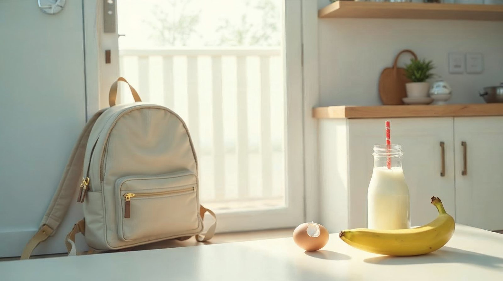
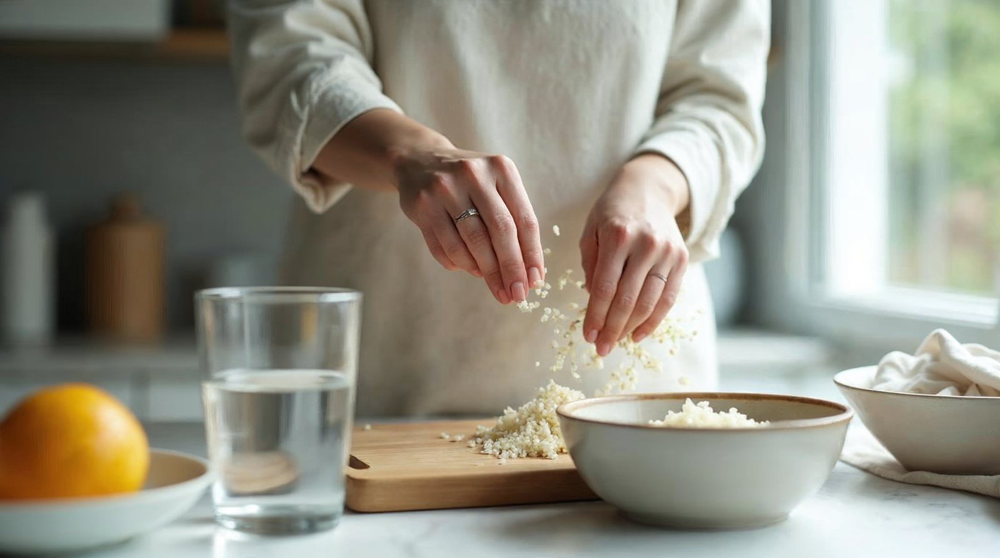
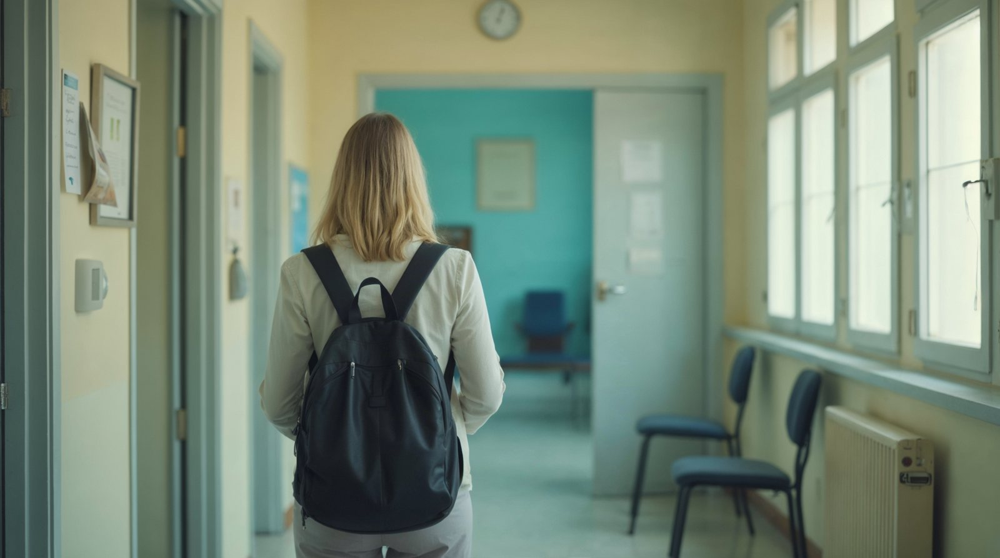
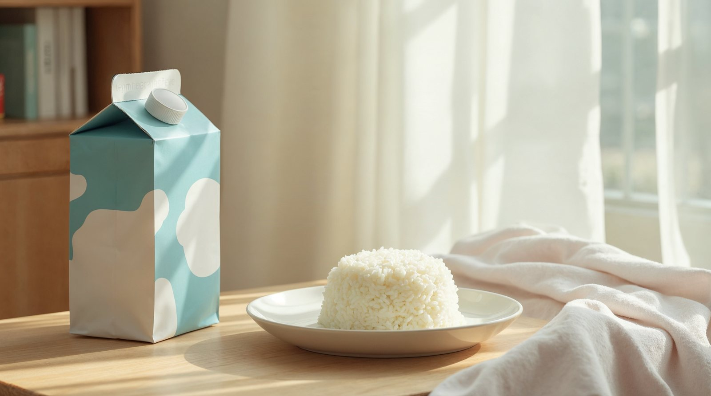
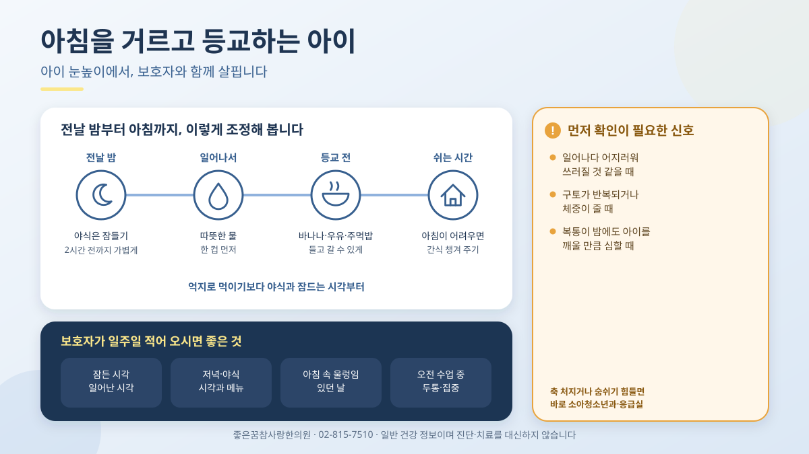

이종호 한의사 감수좋은꿈참사랑한의원 대표원장 (한의사 면허번호 19769)발행 2026-11-24 · 수정 2026-11-26
이 글의 차례
- 왜 이런 불편이 생길 수 있나요
- 왜 아침을 거르면 오전이 더 힘들어질까요?
- 아침을 거르는 이유, 아이마다 어떻게 다를까요?
- 단순히 입맛이 없는 것과 살펴봐야 할 경우는 어떻게 다를까요?
- 먼저 이렇게 여쭙니다
- 일상에서 먼저 해 볼 수 있는 것
- 전날 밤부터 아침까지, 이런 순서를 만들어 보세요
- 아침 메뉴, 단계별로 늘려 가기
- 다이어트 때문에 아침을 거르는 아이라면
- 등교 후 쉬는 시간 간식은 무엇이 좋을까요?
- 주말과 방학 아침은 어떻게 할까요?
- 상황별 예시
- 스스로 점검해 보세요
- 한의원에서 함께 살필 수 있는 경우
- 얼마나 지켜보고 언제 상담할까요
- 이렇게 기록해 오시면 상담이 쉬워집니다
- 이런 증상은 먼저 확인이 필요합니다
- 함께 읽으면 좋은 글
아침을 억지로 먹이기보다 전날 밤 야식과 잠드는 시각부터 조정하면 아이의 아침 입맛이 돌아올 수 있습니다.
학원을 마치고 밤늦게 잠드는 중고등학생은 아침에 겨우 일어나 물 한 모금 마시고 등교하는 경우가 있습니다. 아침을 먹으라고 하면 속이 울렁거린다는 아이도 있어, 상도동과 흑석동, 노량진 쪽 학원을 오가는 아이를 둔 부모님들께 이런 걱정을 자주 듣습니다.
아침을 거르는 모습만 보면 게으름이나 고집처럼 느껴질 수 있지만, 이야기를 들어 보면 전날 밤의 리듬과 아침의 속 상태가 함께 얽혀 있는 경우가 많습니다. 그래서 저는 아침 식탁보다 전날 저녁 8시부터 다음 날 등교까지의 흐름을 먼저 함께 살펴보자고 말씀드립니다.
왜 이런 불편이 생길 수 있나요
- 밤늦게 먹고 자면 아침에 속이 더부룩해 입맛이 없어지기 쉽습니다.
- 잠이 부족한 채 급하게 일어나면 속이 울렁거리고 음식이 넘어가지 않는다는 아이가 있습니다.
- 등교 준비 시간이 짧으면 먹을 시간 자체가 부족해 아침을 거르는 습관이 굳어집니다.
- 시험이나 학교 스트레스가 클 때 아침 속 불편이 더 심해지는 아이도 있습니다.
- 체중을 신경 쓰는 시기에 일부러 아침을 거르는 아이도 있습니다.
- 가족 모두 아침을 먹지 않는 집이라면 아이도 아침을 먹는 습관이 자리 잡기 어렵습니다.
왜 아침을 거르면 오전이 더 힘들어질까요?
밤사이 열 시간 넘게 아무것도 먹지 않은 상태로 등교하면, 오전 수업 시간에 집중이 흐트러지고 머리가 띵하다는 아이가 많습니다. 몸이 쓸 연료가 부족한 채로 하루를 시작하는 셈이기 때문입니다.
오전 내내 빈속으로 버티다가 점심에 급하게 많이 먹으면 오후 수업 시간에 졸음이 몰려오기도 합니다. 하교 뒤에는 허기가 커져 간식을 많이 먹고, 저녁과 야식이 늦어지며 다음 날 아침 입맛이 또 없어지는 고리가 이어지기 쉽습니다.
그래서 아침 한 끼는 양보다 '무엇이든 조금이라도 들어가는 것'에 의미를 두시면 좋습니다. 바나나 하나, 우유 한 컵으로 시작해도 괜찮습니다.
아침을 거르는 이유, 아이마다 어떻게 다를까요?
- 시간이 없는 아이: 늦게 일어나 씻고 옷 입기 바빠 먹을 시간 자체가 없습니다.
- 속이 불편한 아이: 일어나면 속이 울렁거리거나 배가 아파 음식이 넘어가지 않습니다.
- 입맛이 없는 아이: 배가 고프지 않아 먹고 싶은 마음이 들지 않습니다.
- 체중을 신경 쓰는 아이: 살이 찔까 봐 일부러 아침을 건너뜁니다.
어느 쪽인지에 따라 해 볼 방법이 다릅니다. 시간이 없는 아이는 들고 가는 아침이, 속이 불편한 아이는 전날 야식 조절이, 입맛이 없는 아이는 마시는 것부터 시작하는 단계가, 체중을 신경 쓰는 아이는 먹는 이야기를 나누는 방식부터 살피는 것이 좋습니다.
단순히 입맛이 없는 것과 살펴봐야 할 경우는 어떻게 다를까요?
전날 늦게 먹은 날만 아침 속이 불편하고, 일찍 자고 야식을 거른 날에는 조금이라도 먹을 수 있다면 생활 리듬이 크게 작용하고 있을 가능성이 있습니다. 이런 경우에는 저녁과 잠의 순서를 바꾸는 것으로 아침 입맛이 돌아올 수 있습니다.
반면 야식을 먹지 않아도 매일 아침 일어나기가 몹시 힘들고, 일어나 서 있으면 어지럽거나 얼굴이 하얗게 질리는 아이라면 잠이나 식사보다 기립성 조절장애처럼 몸의 조절 문제를 함께 살펴야 할 수 있습니다. 오전에는 힘들다가 오후가 되면 멀쩡해지는 모습도 눈여겨보세요.
빈속에 명치가 쓰리거나 신물이 올라온다면 위 상태를, 등교 전에만 배가 아프고 주말에는 괜찮다면 학교에 대한 긴장을 함께 여쭙습니다. 아이의 말과 보호자가 본 모습을 나란히 놓으면 방향을 잡기가 수월합니다.

먼저 이렇게 여쭙니다
- 아이는 보통 몇 시에 잠들고 몇 시에 일어나나요?
- 전날 밤 늦게 야식을 먹는 날이 많은가요?
- 아침에 속이 울렁거리거나 배가 아프다고 하나요?
- 오전 수업 시간에 배고픔이나 두통, 집중이 어렵다고 하나요?
- 일어나서 집을 나서기까지 시간은 얼마나 되나요?
- 주말에도 아침을 거르나요, 아니면 주말에는 먹나요?
- 가족들은 아침을 함께 먹는 편인가요?

일상에서 먼저 해 볼 수 있는 것
- 아침은 바나나, 우유, 주먹밥 한 개처럼 들고 갈 수 있는 것으로 준비하기
- 전날 밤 야식은 잠들기 2시간 전까지 가볍게 마치기
- 일어나서 따뜻한 물 한 컵 먼저 마시기
- 아침이 어렵다면 등교 후 쉬는 시간에 먹을 간식 챙겨 주기
- 기상 시각을 15분만 당겨 먹을 시간을 조금이라도 만들기
- 전날 밤 아침거리를 식탁 위에 미리 꺼내 두기
- 보호자도 함께 같은 시각에 간단히 먹는 모습 보여 주기
전날 밤부터 아침까지, 이런 순서를 만들어 보세요
- 저녁 7~8시: 가능하면 저녁 식사를 이 시간 안에 마치기
- 학원 귀가 후: 꼭 먹어야 한다면 우유, 과일처럼 가벼운 것으로, 잠들기 2시간 전까지만
- 잠들기 30분 전: 휴대폰은 거실에 두고 조명 낮추기
- 아침 기상 직후: 따뜻한 물 한 컵, 커튼 열기
- 등교 15분 전: 준비해 둔 아침 한 가지 먹기
순서를 한 번에 다 바꾸기보다 아이와 함께 지킬 수 있는 것 한두 가지부터 고르세요. 아이가 직접 고른 약속이 더 오래 지켜지는 경우가 많습니다.
아침 메뉴, 단계별로 늘려 가기
아침을 거의 먹지 않던 아이에게 갑자기 밥과 국을 차려 주면 오히려 부담을 느끼기 쉽습니다. 마시는 것에서 시작해 씹는 것으로 천천히 늘려 가 보세요.
- 1단계: 따뜻한 물이나 미지근한 우유, 두유 한 컵
- 2단계: 바나나 반 개나 요거트 하나 더하기
- 3단계: 작은 주먹밥이나 식빵 한 장에 달걀
- 4단계: 밥 반 공기와 반찬 한두 가지
한 단계가 일주일쯤 편하게 이어지면 다음 단계로 넘어가면 됩니다. 속이 불편하다고 하면 앞 단계로 돌아가도 괜찮습니다.
다이어트 때문에 아침을 거르는 아이라면
사춘기 아이 가운데는 친구나 연예인과 자신의 몸을 비교하며 아침부터 거르는 경우가 있습니다. 이때 "살 안 쪄, 먹어"처럼 몸을 이야기하면 오히려 아이가 더 마음을 닫기 쉽습니다.
아침을 거르면 점심과 저녁에 더 많이 먹게 되기 쉽다는 점을 차분히 이야기하고, 아이가 부담 없이 먹을 수 있는 메뉴를 함께 골라 보세요. 몸무게 숫자보다, 아침을 조금 먹은 날 오전이 어땠는지를 아이와 함께 이야기해 보는 것이 좋습니다.
먹는 양이 계속 줄고 체중에 대한 걱정이 지나쳐 보인다면 혼자 고민하지 마시고 소아청소년과나 정신건강의학과 같은 전문 진료를 일찍 받아 보시기를 권합니다.
등교 후 쉬는 시간 간식은 무엇이 좋을까요?
아침에 도저히 먹기 어려운 아이라면 1교시가 끝난 쉬는 시간에 먹을 것을 챙겨 주는 것도 좋은 방법입니다. 일어난 지 한두 시간이 지나면 속이 풀려 조금씩 먹을 수 있는 아이도 있습니다.
작은 주먹밥, 바나나, 두유, 치즈처럼 가방에서 꺼내 몇 분 안에 먹을 수 있는 것을 골라 주세요. 학교 규칙상 교실에서 먹기 어렵다면 등굣길에 먹을 수 있는 것으로 준비해도 됩니다.
주말과 방학 아침은 어떻게 할까요?
주말에 늦잠을 자고 아침 겸 점심을 먹으면 일요일 밤 잠이 늦어지고 월요일 아침 입맛이 또 사라지기 쉽습니다. 주말에도 평일보다 1시간 늦은 정도까지만 자고, 일어나면 가볍게라도 아침을 먹게 해 보세요.
시간 여유가 있는 주말 아침은 아이가 좋아하는 메뉴를 함께 만들어 보는 기회로 삼아도 좋습니다. 즐겁게 먹은 기억이 쌓이면 평일 아침에도 한 입 먹어 보려는 마음이 생기기도 합니다.
상황별 예시
- 예를 들어 고등학생 아이가 밤 11시에 학원에서 돌아와 떡볶이를 먹고 새벽 1시에 잠든 뒤, 아침 7시에 겨우 일어나 물만 마시고 등교하는 경우에는 귀가 후 간식을 우유와 과일로 바꾸고, 잠드는 시각을 조금씩 당기는 것부터 함께 정합니다.
- 예를 들어 중학생 아이가 아침마다 속이 울렁거린다며 아무것도 먹지 않는데 주말에는 아침을 잘 먹는 경우에는 평일 아침의 긴장과 기상 시각을 함께 살펴보고, 등교 후 쉬는 시간에 먹을 간식을 챙겨 주는 방법을 이야기합니다.
- 예를 들어 아침 준비 시간이 10분도 안 되는 아이라면 전날 밤 주먹밥을 만들어 두고, 버스를 기다리거나 걸어가며 먹을 수 있도록 포장해 두는 방법을 함께 찾아봅니다.
스스로 점검해 보세요
- 일주일에 나흘 넘게 아침을 거르고 등교한다
- 밤 10시 이후에 야식을 먹는 날이 많다
- 자정을 넘겨 잠드는 날이 일주일에 사흘 이상이다
- 일어나서 집을 나서기까지 15분도 안 걸린다
- 아침에 속이 울렁거리거나 배가 아프다는 말을 자주 한다
- 오전 수업 중 머리가 아프거나 집중이 안 된다고 한다
- 체중이 신경 쓰여 아침을 일부러 거른다고 말한다
해당하는 항목이 많다면 아침 메뉴보다 전날 밤 야식 시각과 잠드는 시각부터 하나씩 바꿔 보세요.

한의원에서 함께 살필 수 있는 경우
- 아침마다 속이 울렁거리거나 배가 아픈 경우 잠과 식사 시각, 소화를 함께 살핍니다.
- 늦게 자고 아침에 일어나기 힘든 상태가 이어지는 경우 잠의 리듬을 함께 살핍니다.
- 시험이나 학교 스트레스가 클 때 증상이 심해지는 경우 긴장과 마음 상태를 함께 여쭙니다.
좋은꿈참사랑한의원에서는 아이도 보호자와 함께한 자리에서 맥을 짚으며, 아이 눈높이에 맞춰 아이와 보호자께 잠과 식사, 생활을 천천히 여쭙습니다. 필요하다고 판단될 때는 설진을 더해 살핍니다. 아이에게 맞는 방법을 보호자와 함께 정하고, 소아청소년과 확인이 먼저 필요한 경우에는 함께 안내합니다.
이때 아이의 하루를 전날 저녁부터 다음 날 등교까지 순서대로 들려 달라고 부탁드립니다. 저녁 식사, 학원 귀가, 야식, 휴대폰, 잠드는 시각, 일어나는 시각이 나란히 놓이면 아침 입맛이 어디서 사라지는지 보이기 시작합니다.
저는 잘 먹고, 잘 싸고, 잘 자고, 마음 편하고, 몸 따뜻하게, 이 다섯 가지를 몸이 회복하는 바탕으로 봅니다. 아이도 다르지 않아서 아침의 속 상태와 함께 화장실 리듬도 여쭙습니다.
사춘기 아이는 보호자 앞에서 말을 아끼기도 해서, 아이가 편하게 이야기할 수 있도록 천천히 기다립니다. 그리고 야식 시각이나 아침 첫 단계처럼 해 볼 한두 가지를 아이와 함께 정합니다.
얼마나 지켜보고 언제 상담할까요
- 야식 시각과 잠드는 시각을 조정하고 2~3주 동안 아침에 먹은 것과 속 상태를 적어 보세요.
- 바꿔 본 뒤에도 아침마다 속이 울렁거리거나 배가 아픈 날이 일주일에 여러 번 이어지면 상담을 받아 보시기를 권합니다.
- 아침에 일어나기가 몹시 힘들고 서 있으면 어지러운 날이 잦다면 기간과 상관없이 소아청소년과에서 일찍 확인해 보세요.

이렇게 기록해 오시면 상담이 쉬워집니다
- 일주일 동안 아이가 잠든 시각과 일어난 시각
- 전날 저녁과 야식의 시각, 메뉴
- 아침에 속이 울렁거리거나 배가 아픈 날과 그 정도
- 오전 수업 중 두통이나 집중 어려움이 있는지
- 아침에 먹은 것과 먹은 뒤 속이 편했는지
- 주말 기상 시각과 주말 아침 식사 여부
한 숟갈이라도 먹여 보내고 싶은 마음과, 아무것도 넘어가지 않는 아이의 아침이 부딪히면 서로 지치기 쉽습니다. 오늘은 아이와 함께 고른 한 가지만 해 보셔도 충분합니다.
다음에 오시면 지난 일주일 동안 아침에 무엇을 조금이라도 먹었는지부터 여쭙겠습니다.
이런 증상은 먼저 확인이 필요합니다
- 아침에 일어나다 어지러워 쓰러질 것 같거나 실제로 쓰러진 경우
- 구토가 반복되거나 체중이 줄어드는 경우
이런 신호가 있으면 한의원보다 가까운 병원이나 응급실을 먼저 찾으세요.
함께 읽으면 좋은 글
- 아침마다 일어나지 못하고 서 있으면 어지러운 청소년, 기립성 조절장애는 어떻게 살피나요?
- 아침을 거르고 공부를 시작하면 오전에 속이 쓰릴 때는 어떻게 하나요?
- 성장기 아이가 갑자기 많이 먹고 늘 배고프다고 할 때는 무엇을 살피나요?

여쭙는 것
- 아이는 보통 몇 시에 잠들고 몇 시에 일어나나요?
- 전날 밤 늦게 야식을 먹는 날이 많은가요?
- 아침에 속이 울렁거리거나 배가 아프다고 하나요?
생활에서 해 볼 것
- 아침은 바나나, 우유, 주먹밥 한 개처럼 들고 갈 수 있는 것으로 준비하기
- 전날 밤 야식은 잠들기 2시간 전까지 가볍게 마치기
- 일어나서 따뜻한 물 한 컵 먼저 마시기
한의원에서 함께 살필 것
- 아침마다 속이 울렁거리거나 배가 아픈 경우 잠과 식사 시각, 소화를 함께 살핍니다.
- 늦게 자고 아침에 일어나기 힘든 상태가 이어지는 경우 잠의 리듬을 함께 살핍니다.
- 시험이나 학교 스트레스가 클 때 증상이 심해지는 경우 긴장과 마음 상태를 함께 여쭙…
먼저 확인이 필요한 신호
- 아침에 일어나다 어지러워 쓰러질 것 같거나 실제로 쓰러진 경우
- 구토가 반복되거나 체중이 줄어드는 경우
한눈에 보는 표
| 구분 | 핵심 |
|---|---|
| 여쭙는 것 | 아이는 보통 몇 시에 잠들고 몇 시에 일어나나요? 전날 밤 늦게 야식을 먹는 날이 많은가요? |
| 생활에서 해 볼 것 | 아침은 바나나, 우유, 주먹밥 한 개처럼 들고 갈 수 있는 것으로 준비하기 전날 밤 야식은 잠들기 2시간 전까지 가볍게 마치기 |
| 한의원에서 함께 살필 것 | 아침마다 속이 울렁거리거나 배가 아픈 경우 잠과 식사 시각, 소화를 함께 살핍니다. 늦게 자고 아침에 일어나기 힘든 상태가 이어지는 경우 잠의 리듬을 함께 살핍니다. |
| 먼저 확인이 필요한 신호 | 아침에 일어나다 어지러워 쓰러질 것 같거나 실제로 쓰러진 경우 구토가 반복되거나 체중이 줄어드는 경우 |
자주 묻는 질문
억지로라도 먹여야 하나요?
억지로 먹이면 오히려 속이 불편해질 수 있습니다. 조금씩 먹을 수 있는 것부터 시작하고, 전날 밤 습관을 함께 살펴봅니다.
아침을 안 먹어도 점심을 많이 먹으면 되지 않나요?
오전 내내 빈속이면 점심에 급하게 많이 먹게 되는 아이도 있습니다. 가볍게라도 아침을 챙기는 쪽을 권합니다.
우유를 마시면 배가 아프다는 아이는 어떻게 하나요?
우유가 맞지 않는 아이는 두유나 바나나, 주먹밥처럼 다른 것을 골라 보세요. 무엇을 먹었을 때 편했는지 적어 오시면 함께 살펴봅니다.
진료 시간은 어떻게 되나요?
좋은꿈참사랑한의원은 평일 09:30~20:00(점심 13:00~14:00), 토·일·공휴일 09:30~15:00(점심시간 없음)에 진료합니다.
좋은꿈참사랑한의원은 재진 때 지난번 이야기부터 이어서 여쭙니다. 진료시간과 예약은 오시는 길에서 확인하세요.
어디서 상담받을 수 있나요?
좋은꿈참사랑한의원은 서울 동작구 만양로2길 2 신성빌딩 3층·5층(서울 동작구 상도동, 7호선 상도역 3번 출구 근처)에 있습니다. 한의사 3명(이종호 대표원장, 조영기 수석진료원장, 정원영 진료원장)이 진료합니다. 진료시간은 평일 09:30~20:00(점심 13:00~14:00), 토·일·공휴일 09:30~15:00이며, 방문 전 전화로 확인을 권합니다. 예약은 네이버 예약, 카카오톡 상담, 전화 02-815-7510로 받습니다.
이 글은 일반적인 건강 정보이며 개인의 진단이나 치료를 대신하지 않습니다. 증상이 있거나 복용 중인 약이 있다면 진료를 통해 확인하세요. 치료 효과는 개인마다 다를 수 있습니다.
작성 기준: 일반적으로 알려져 있는 건강 정보를 참고해 정리했습니다(대표원장 감수). 증상 기록은 1~2주 동안 하루 1회, 비슷한 시간에 적어 오시면 지난 상태와 비교하기 쉽습니다.